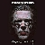

Tegnap mûsort csináltunk mi is. Aztán nekünk is csináltak egyet. Ugye, a
blogolást el kell valahol kezdeni, de az elsõ hûsölés a fogdában is egy élmény. Pláne
(elõ)szülinapi kiadásban, ilyet csak egyszer tesz az ember az életében. Kedves heppibörsztdéj
élmény, már 23-án: kulcszörgés a zárkaajtón, hajnali dörmögõ hang - "Jöjjön, vegye az összes
cuccát!"...
Jó pár dolgot leírt Tomcat és Blogin. Mit mondjak, ami közös benyomás
volt, az a mérhetetlen tahóság (ritka kivétellel) volt a hatóság részérõl. Mintha ezeket a
szolgálatot teljesítõ embereket beoltották volna tisztességes bánásmód ellen. A hibáztatás
halmozása helyett csak annyit, hogy nem véletlenül kényszerül a Fletó kordon mögé. Tisztességes
embernek, vezetésnek nincs félnivalója. De egy félelemre építõ vezetõ a beosztottait
igyekszik korrumpálni, belerángatni rossz dolgokba, beszennyezni õket, hogy ne bújhassanak
ki, ne reméljenek menedéket, megértést a másik oldalon. Szembenéztünk a kordonon át, mi és
õk, velünk csak az elkeseredés, a felháborodás; velük az erõszak kimunkált eszközei, a
hatalom és egyfajta Törvény. Törvény, amit ember csinált, a maga, és nem a Természet képére.
A Természet Törvénye egyszerû, következetes. Csak azt sújtja, ki vét ellene, hibázik. Az
emberi Törvény más, azt a szeszély és az érdek fújja jobbra-balra.
Mikor odafent
kilépek a gépajtón a mélybe, a Természet törvényeinek karjaiba vetem magam: tenyerére vesz a
légellenállás, és magához ölel a gravitáció. Ismerhetem õket, megtanulhatom, miként bánjak
erõikkel, és mi az, amit nem tolerálnak. Felkészülhetek, reflexeket csiszolhatok, végül egy
mámoros élmény az, ami megajándékoz; ami enyém az utolsó cseppig, mikor a kupola összeomlik
mellettem a földön. Vagy, ha vétek, tudom, hogy nem rosszindulatból lesz nekem rossz,
mindenkivel így történik.
Az ember Törvénye, mikor durván és megalázva beszélt
velünk, amikor megállított ott az esõs utcán, és a falhoz terelt egy órácskát "zuhanyozni",
az nem ilyen egyenes. Azt kiismerni igazán nem lehet, csak annyira, miként egy sokat látott
idegent, akivel sose beszéltél, csak látod menni, mozogni, errõl-arra. Nem beszél veled
õszintén, nem bánik veled egyenrangúan. Az emberképû Tövény nem humanista. Az pontosan arra
hasonlít, aki alkotja, aki betartatja és azokat is képére formálná, akiken uralkodik. De
ugyanúgy cserben is hagyja õket, ha valakinek úgy tetszik. Lehet-e ilyen mértékhez mérve
õszintén tisztességesnek neveznem magam, vagy akár elfogadnom, ha rossznak titulálnak? Ahhoz
a Törvényhez képest, amely nem bünteti azokat, kik lopnak, sikkasztanak és hazudnak, legyen
akár reggel, vagy éjjel, netán este...
Minket a hatalom tollas és szájaló
kiszolgálói tolvajlással próbáltak megvádolni, ti. szerintük autót törtünk fel és benzint
loptunk. Meg a nénikéteket, hazugok! Remélem, a gyehennát még nem érte el a gázáremelés, lesz
ott nektek meleg, hogy belegebedtek...
...Nem tudom, a tudósok az idõ
relativisztikus leírásánál vizsgálták-e a fénysebesség-közeli állapotok mellett a
falhozközeli állapotot is, miközben hátul komor osztag sorakozik, elöl egy kirakatablak
homályos üvege; vízcsobogás, súlyosan koppanó cseppek a karon-vállon, némelyik csepp permete
a szembe fröccsen, újabb inger a kellemetlenség-kaleidoszkópban. Lassan telik ez az idõ,
minden cseppnek hely kell, és azok zúdulnak lefele sûrûn, hidegen, minket az útjukba lökött
egy "Forduljon a fal felé, kezeket a falra!", majd
követte jó pár "Nem beszél!", "Ne mozogjon!"; jönnek a cseppek sûrûn, kitartóan. Itt egy
érdekes vízóra, mely nem mutatja, hanem nyújtja az idõt, a komor alakok homályos foltjai az
üvegen nyomnak bele az csepegõ idõ torkába, lassan, lassan. Kar, láb zsibbad, jelez, de a
cseppek kalapácsa leüti a szavazatukat, rálicitálnak rendületlenül. Kinézek balra, álló alak,
támasztja a falat, az arca a sapka alól világos folt, rámnéz, fintor, egy hang szólna felõle,
de jobbról elvágja egy komor rendreutasítás. Kinézek jobbra, a vállamat célzó vízcsepp a
sapkám sildjén porlik, hunyorog a szemem, a kaleidoszkóp új mintája. Magas alak áll ott,
sisak-vért-szigorúság páncélozza. Pár vonása látszik a zuhatagban, egy arc, rajta egyenes,
hosszúkás orr, kétoldalt ráncbarázda, barnásszõke bajusz, kék szem, körötte szarkalábak, de
ezek is komorlanak. Olyan 40-45 éves lehet, maga is talán családos, itt áll, mert szerinte
ez a dolga, de tán a szerettei érte is rettegnek. Én nem bántom-bánthatom õt, ne féljetek
ismeretlenek. Nem egyenlõek a lehetõségeink. De tán a szándékaink sem.
Aztán
jönnek új autók, látom az üvegben, majd mögém lép egy alak, kéz fog a vállamra, szólít egy
hang, menjek vele. Beülünk a meseautóba, zsebeimet kipakolom, mint már párszor a nap során.
Volt nekünk már állami "thai-masszázs" is ma, hiába no, a Bombagyár fullextrás buli. Hopp,
itt már nem esik, öröm az ürömben. De az idõ lassan suhan mégis. Adatfelvétel. Majd
vakarózás a rendõr részérõl. Hogy is kell kitölteni ezt a lapot? Nézek megértõen,
elrontottam az estéjét, kiderült, hogy nem gördülékeny a gépezet. A gördülés késik tovább, mert
újabb problémák tornyosulnak a hatékony rabosításban: kik fogtak el, kik vagyunk mi és miért
is álltunk ott az esõben? Keresgélés, tanácstalanság, mindezt kék fények villogása
szabdalja; járkálás neszez, beszélgetés pereg. Én ülök. A többieket nem látom, akkor még
reméltem, hogy õvelük is már foglalkoznak. Utólag tudtam meg, hogy én akasztottam meg a
folyamatot, önhibámon kívül. A többiek áznak tovább, sajnálom srácok. Aztán mozgás, a
társaságunk hölgytagja, már nem mosolygósan, hanem görnyedten, reszketve rogy a kísérõ
ülésére, alig van magánál, sír. Elõször azt hittem, bántották. De nem, hála Istennek.
Biztatom, hogy üljön beljebb, a rendõrök is láthatóan zavarban vannak, nem ellenkeznek.
Aztán szerencsére erõt vesz magán, beül és tudok segíteni. Teljesen átázott-átfázott. Ráadom
a dzsekimet, az szárazabb, dörzsölöm, hogy legyen vérkeringése, meg én is kimelegszem. Lassan
megnyugszik, szegény.
Aztán jönnek még ketten a társaságból, gyors
haditanács, sutyorgunk. Ránk zárják az ajtót, indul a menet, jajgat a sziréna, halihó, el az
útból, visszük a csõcseléket! Némi zötyögés, aztán megérkezünk. Épület, jövõ-menõ alakok az
esõben, bevezetnek az elõcsarnokba. Kezdõdik a kincstári macera. Ide ül, oda áll, hogy
hívják, nem beszélget! Páncélos alakok szigorkodnak. Fényképezés! Aztán megint ide áll,
falnak fordul, na, leülhet. Közben megjönnek nekünk kedves emberek: dr. Morvai Krisztina,
dr. Gaudi-Nagy Tamás. A rendõrök kevésbé vannak elgyönyörödve; az egyik, egy pökhendi õrnagy
osztja az észt, de még nekem is vigyoroghatnékom van, annyira szánalmas. Az õrpáncélos
rámmordul: de jó kedve van, forduljon meg!...
Majd felkísérnek a zárkaszintre, megint ide áll, nem beszél. Majd ügyintézés, papírkitöltés,
motozás, értéktárgy-letételezés. Közben elhangzik az ittlétem eddigi egyetlen indoka:
bûncselekmény gyanúja. Szép, ugyan miért? Aztán folyosó, jobbra-balra, egy nyitott ajtó vár,
2-es zárka. "Belépni!". Kattan mögöttem a zár, csörren a
kulcs. Sárga szoba, két fapriccs, asztalka. Szögletesség, sivárság. Kint dobol az esõ, hûvös a
levegõ, a szitarács mögött nyitva az ablak? Lehet. Tényleg "hûvösön" vagyok. Az idõt megint
mérik a vízcseppek, csak most nem rajtam porlanak szét. Cserélõdött a minta a kaleidoszkópban.
Leheveredek az egyik priccsre, pfuh, poros. Átülök a másikra, az tiszta, lefekszem, alszom,
felkelek néha mozogni. Fázom.
Kába támolygás és szunyókálás után zörgés, nyílik
az ajtó, az õr kikísér, megint a letéti helység. Nézzem át, megvan-e minden. Átveszem,
aláírom, mehetek, szabad vagyok. Egy új ember kísér le, ez már mosolyog, könnyû érzés.
Nahát, ilyen is van. A többiek lent vannak, megvártak. Összeszedjük magunkat, kilépünk az
esõbe. De ekkor már szalad az idõ a cseppek függönyével. Szabadok vagyunk.
Ezúton szeretném kifejezni köszönetemet dr. Morvai
Krisztinának és dr. Gaudi-Nagy Tamásnak a gyors segítségért. Külön köszönet illeti Morvai
Krisztinát a társaságunk hölgytagja nevében a kedves szavakért és biztatásért, ami sokat
segített a rosszullétig elcsigázott lánynak. Köszönjük!
Volt egy tippem, hogy "meglátogatjátok" a fogdát, miután megnéztem a neten az élõ Bombagyár adást. Azok a fránya megérzések....
Az írás a Tõled megszokott.
Az ember ott van és átéli, megéli.
Örülök, hogy azon szerencsések között lehetek, akik ismernek és olvashatják egyéb írásaid is.
A következõ szülinapodat kívánom, hogy egy Új, Szebb, Jobb, Szabad Magyarországon ünnepeld ejtõernyõzéssel!
Kívánom, innen 2000 km-rõl, hogy Bombagyár hangja minnél több emberhez és minnél messzebb jusson el.
Jelenleg ebben tudok segíteni, hogy az itt élõ és az otthoni MAGYAR ismerõsimet megismertetem a Bombagyárral és azzal amit képvisel.
IGEN! Nagy szükség van Rátok!
Tiszta, igaz hangra a sok hazugság között.
Tiszteletem és elimerésem a Bombagyár minden tagjának!
Szebb Jövõt!
30. Rammstein
2007-10-24 20:34:36

Szebb Szülinapokat és boldogabb jövõt!:)
29. BiG
2007-10-24 18:07:21
Köszönöm mindenkinek a jókívánságokat. Jólesnek :-) Annak különösen örülök, hogy nektek örömet szerzett a kis szösszenet olvasása.
Mi volt a vád? Semmi. Szerintem, mivel kábé Tomcat-tõl 30 centire vizslattam egy horpadást, valószínûleg ez. A közelség hozzá :-)
Hanyadik október 23-at ünneplem? Hát eggyel többet, mint tavaly! :-D
Valakit itt Wass Albertre emlékeztet az egyik rész. Nem véletlen, bár az említett mûvet még nem olvastam, de néhányat már igen. Én jó írónak tartom.
Szüleim, bár aggódtak, de nem neheztelnek. Nem a "rendszer barátai", õket is szívatták anno eleget. Nem hisznek a vörös bagázsnak.
Kedves Pipi úr!
Sajnálom, hogy tavaly ilyen megpróbáltatásban volt részed. Remélem nem lesz több ilyen. Viszont jól mutatja, hogy igen, a helyzet itt nem igazán változott. Sõt. Visszaváltozott.
Rendszerváltás? Papíron, kérem. Az mindent kibír, a hazugságot is.
26.Pipi úr.Ezek szerint a tahóbbját válogatják ki erre a "munkára".Amúgy Tegnap az Alkotmány/Kálmán Imre utcában is hihetelen tahók voltak, még a parancsnok is.
27. Korner
2007-10-24 14:06:57
Privát üzenet Csak regisztrált felhasználók olvashatják el.
tényleg szép
amúgy a tahóságról nekem kicsit más benyomásom volt. tavaly szeptemberben (TV ostrom másnapján) nekem is sikerült a VIII. kerületi fogdában majd a Gyorskocsiban végeznem. A rohamrendõrök, akik bevittek, hihetetlen gecik voltak (agyba fõbe vertek, gyaláztak, megaláztak, derékszögben elõrehajlítva vittek minket ami egyrészt iszonyú fárasztó másrészt nem láthattuk az arcukat). Én nem álltam ellen (azt hittem igazoltaatnk, aztán megyünk), a haverom igen, neki kapásból kirúgták a lábát és rugdosták a földön. Lényeg a lényeg, elindultak velünk befelé, az összes elég genya volt, egyetlen egy volt viszonylag rendes ("Látom, maga normális"-ez tmondta és azért kevesebbet kaptam mint a cimborám). Mikor beértünk egy eléggé tapló bunkó tiszt basztatott minket, de aztán eltûnt. A többi szolgálatot teljesítõ (hozzáteszem végtelenül fáradt) rendõr kifejezetten normális volt. Amíg a cellában voltunk, többször kinyitotta az ajtót és félórákat beszélgettünk, nem aljas gazemberekként kezelt minket, tényleg normális volt. Egyuik cellatársam mesélte, hogy amikor vitték be, az egyik ifjú rohamrendõr odaszólt a többinek, hogy "Vigyázz, sajtó!", mire megúszta a verést. Pedig kamera igazából nem volt a környéken. Amikor átvittek a Gyorskocsiba, az autót vezetõ rohamrendõr szintén egy hatalmas (mindne értelemben, kb 150 kilót nyomott) tahó volt, de a társa, egy rendõrnõ és a Gyors'ban dolgozó összes õr szintén normális volt, és amikor az ügyvédem se sok jóval kecsegtetett, akkor az õr mondta, miután elmeséltem neki, mi volt, hogy szerinte kiengednek. Pár órára rá (olyan 80óra után) ki is engedtek. Félig amúgy meg tudtam érteni a rendõröket, hogy agresszívek voltak, de ez egy felelõsségteljes munka, engem is kirúgnának a munkahelyemrõl, ha egy bunkó ügyfél után a következõvel szívóznék. Pedig ez kisebb gond lenne szerintem, mint egy csomó ember összeverése. Lényeg a lényeg, azért nem minegyik rendõr tahó, inkább a rohamban kint levõk azok. De azok nagyon. És bocs, hogy ilyen hosszú lett.
Boldog Szülinapot!
Szerintem meg nézd a dolog jó oldalát is.Fiatal vagy,Tiéd a jövõ! Az úgy volt hogy a miénk lesz.(by Sándor György)
Gondolj csak bele.Demszky,Zorbán és társai mind a mai napig abból az erkölcsi tõkébõl élnek(más nem is nagyon maradt nekik no persze az öszesíbolt pénzeken kívül) hogy õk bizony szembeszáltak a Kádári diktatúrával (amit demokráciának híttak akkor akárcsak a mait) lesittolták zaklatták gumibottal verték õket fejbe.Itt már van lovasroham,tonfa,könygázfelhõ,gumilövedék is.A fejlõdés tagadhatatlan.Ez a rezsim még gátlástalanabb mint a Kádári volt.(õ még komcsinak valotta magát,erre a bagázsra csak Máray szavaival tudok utalni "nincs roszabb a hitehagyott kommunistánál mert az már csak a koncot védi").Bár én kétlem hogy ez a garnitúra valaha is hitt volna valamiben a pénzen kívül.
Egy szó mint száz BiG mester ez egy karrier kezdete! Amikor ez a rezsim megdõl(mert a végtelenségig nem tarthat ki és a sok disznóság után az összeomlása látványos kell hogy legyen) hatalmas nagy erkölcsi tõkéd (tõkétek és egy picit tán nekem is) lesz az hogy akkor is felléptetek a renxer ellen amikor annak még komoly követketményei voltak.Ehhez már csak az kell hogy megérjük a bukásukat.Én hiszek benne de a hit kevés tenni is kell.De a tudjuk merjük tesszük elcsépélt jelszavát hagyjuk meg az õs fidesznek.Meg úgy emléxem a lopcsányinak is volt egy ilyen kiszólása de aztán szóltak neki hogy ezzel ne égesse magát.Bocs hogy hosszú voltam.
24. 24. Törölt felhasználó
2007-10-24 09:51:25
Boldog szülinapot ! (az enyém szept 18. :) :) )
Kommentálni nem igen akarom, nem is igen lehet. Talán csak annyit, ugyanaz az érzés jár át, mint a módszerváltás elõtti években. Akkor is a tehetetlenség dühe és a változás lehetõségébe vetett hit hiánya járt át. Változás ugyanis csak akkor lehet, ha azt sokan akarják. Tömegbázis nélkül nincs forradalom. 89-ben sem volt. Egyszerûen csõdbe jutott a szocialista tábor és akik elõidézték, eljátszottak egy színjátékot. Ma is csak manipuláció zajlik.
23. ahus -A rendszerbõl kizárva!
2007-10-24 09:18:51
Szép szöveg. (Nincs is miért belekötni, nem is teszem.)